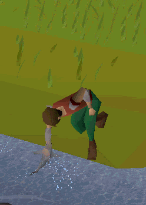
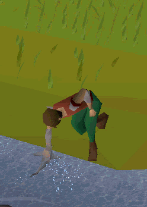
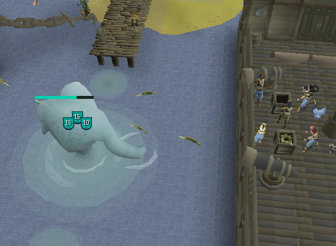

Brayden would like to excitedly and agressively invite you
too join him in the Massively Multiplayer Online Roleplaying Game: Runescape.


On this page of the World Wide Web Brayden will be covering a small and very biased selection of the Runescape experience in an effort to convince you to:
Join Him

Some things to Keep in mind when starting Runescape
- This game has people who have been playing for about 25 years and also people who have been playing for about 25 minutes.
Regardless of your skill level in the game you will likely find someone similar. - There is no one Real way to play. You can play as effcient as you want, you can play as casually as you want.
At the end of the day it is your experience with the game, do not let anyone, including me tell you how to enjoy it! - This game is MASSIVE, its okay to feel lost or confused at any point during your adventure!
Check online resources and ask around, maybe someone in game is feeling chatty today.
Skilling is its own journey!
New oppertunities for better materials like rare metals and useful hardwoods
open up to you as you increase your skilling levels as well as upgraded tools for you to use along your journey.
All characters can have an abundance of skills to call upon in their journey all that work with each other in amazing ways
synergizing with one another to help you increase multiple skills at one time.

From felling the mightiest trees; to battling the mightiest catches the sea has to offer.
 

There are many different exciting oppertunities and adventures to find through Skilling.


Here are a few examples of different synergies for your various Skills:
- Cooking & Fishing
Catch small fish with your rods or nets and hunt the largest of the sea with a little patience and a trusty harpoon!
Then cook your fresh catch on an open fire or a Cooking Range.
- Woodcutting & Fletching
Chop massive trees down to logs and then use a knife to fletch those logs into arrows shafts.
Combine those with feathers and arrows tips and you have yourself some ranged amunition! - Mining & Smithing
Use a pickaxe to mine precious metals from the earth. Then melt and shape those metals into all manner of items!
Arrowheads, Swords, Lamps, even nails for your future house! - Slayer and Prayer
You gain favor with the gods of Gielinor by burying the bones or spreading the ashes of defeated foes.
You can also increase the amount of favor gained by offering the bones to an altar both blessed or cursed. How does slayer help that?
Well...thats where Slayercomes in.
The time has never been better to join Runescape!
With Quality of Life changes dropping monthly as well as new content;
there is no end to the adventure you could be having right now!
Think about all the amazing adventures you could have in this brand new World!
It could look something like this...

it will likely look like this though...

I hope you get hyped and I manage to interest or convince you to join the world ofRunescape.